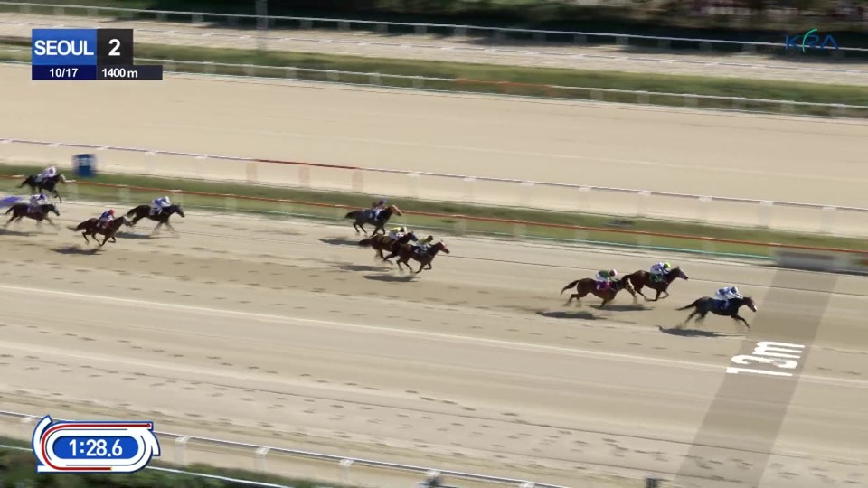

<title>ON-AIR 선두권 식별기</title>
<meta name="claude:viewport-fit-sides" content="cover">
<link rel="stylesheet" href="https://fonts.googleapis.com/css2?family=IBM+Plex+Sans+KR:wght@500;600&family=Noto+Sans+KR:wght@400;500;700&family=IBM+Plex+Mono:wght@400;500&display=swap">
<style>
/* Layout: one reading column (max 860px) like a lab report; figures sit in the column on a white "sheet"; numbers in a mono face. */
:root {
  --bg: #f3f5f2; --surface: #ffffff; --ink: #16201b; --quiet: #5a675f; --line: #d7dcd6; --accent: #0f5a66; --accent-soft: #e2eef0;
  --s1: #2a78d6; --s2: #eb6834; --mute: #b4bcb5; --tint: #eaeeea;
  --cap-1: #ffffff; --cap-2: #f2c200; --cap-3: #d62a2a; --cap-4: #1b1b1b; --cap-5: #1f5fd0; --cap-6: #1c9a3c; --cap-7: #7a4a22; --cap-8: #f08fb5; --cap-9: #7b3fb5; --cap-10: #7cc7ee;
  --display: "IBM Plex Sans KR", "Apple SD Gothic Neo", "Malgun Gothic", sans-serif;
  --body: "Noto Sans KR", "Apple SD Gothic Neo", "Malgun Gothic", sans-serif;
  --mono: "IBM Plex Mono", ui-monospace, "SF Mono", Menlo, monospace;
}
@media (prefers-color-scheme: dark) { :root:not([data-theme="light"]) {
  --bg: #111613; --surface: #1a211d; --ink: #e8ece8; --quiet: #a3aea7; --line: #2e3832; --accent: #74c6d2; --accent-soft: #1c3338;
  --s1: #3987e5; --s2: #d95926; --mute: #55605a; --tint: #232b26; color-scheme: dark } }
:root[data-theme="dark"] {
  --bg: #111613; --surface: #1a211d; --ink: #e8ece8; --quiet: #a3aea7; --line: #2e3832; --accent: #74c6d2; --accent-soft: #1c3338;
  --s1: #3987e5; --s2: #d95926; --mute: #55605a; --tint: #232b26; color-scheme: dark }
* { box-sizing: border-box; }
body { background: var(--bg); color: var(--ink); font: 16px/1.75 var(--body); padding-left: max(16px, env(safe-area-inset-left, 0px)); padding-right: max(16px, env(safe-area-inset-right, 0px)); padding-block: 36px 72px; }
main { max-width: 860px; margin: 0 auto; display: flex; flex-direction: column; gap: 44px; }
header .kicker { font: 500 13px/1.4 var(--mono); color: var(--accent); letter-spacing: .04em; margin: 0 0 10px; }
h1 { font: 600 clamp(28px, 5vw, 40px)/1.25 var(--display); margin: 0 0 14px; text-wrap: balance; }
.thesis { font-size: 18px; margin: 0; max-width: 40em; }
h2 { font: 600 23px/1.35 var(--display); margin: 0 0 6px; text-wrap: balance; }
h3 { font: 600 17px/1.4 var(--display); margin: 22px 0 6px; }
section > p, section > ul, section > ol { max-width: 43em; margin: 10px 0 0; }
section .lead { color: var(--quiet); margin-top: 0; }
ul, ol { padding-left: 22px; } li { margin: 5px 0; }
b, strong { font-weight: 700; }
.num { font-family: var(--mono); font-variant-numeric: tabular-nums; }
.tiles { display: grid; grid-template-columns: repeat(3, minmax(0, 1fr)); gap: 14px; margin-top: 26px; }
@media (max-width: 700px) { .tiles { grid-template-columns: 1fr; } }
.tile { background: var(--surface); border: 1px solid var(--line); border-radius: 6px; padding: 16px 18px; }
.tile .v { font: 500 34px/1.1 var(--mono); letter-spacing: -.02em; }
.tile .k { font-weight: 700; margin-top: 8px; line-height: 1.45; }
.tile .d { color: var(--quiet); font-size: 13.5px; line-height: 1.55; margin-top: 4px; }
figure { margin: 18px 0 0; background: var(--surface); border: 1px solid var(--line); border-radius: 6px; padding: 14px; }
figure img { display: block; width: 100%; height: auto; border-radius: 3px; }
figure .scroll { overflow-x: auto; } figure svg { display: block; width: 100%; height: auto; min-width: 560px; }
figcaption { color: var(--quiet); font-size: 13.5px; line-height: 1.6; margin-top: 10px; }
.tablewrap { overflow-x: auto; margin-top: 14px; }
table { border-collapse: collapse; width: 100%; font-size: 14.5px; line-height: 1.55; }
th, td { text-align: left; padding: 9px 12px; border-bottom: 1px solid var(--line); vertical-align: top; }
th { font-weight: 700; font-size: 13px; color: var(--quiet); white-space: nowrap; }
td.n, th.n { text-align: right; font-family: var(--mono); font-variant-numeric: tabular-nums; white-space: nowrap; }
tr.hl td { background: var(--accent-soft); }
.caps { display: flex; flex-wrap: wrap; gap: 8px; margin-top: 14px; padding: 0; list-style: none; max-width: none; }
.caps li { display: flex; align-items: center; gap: 6px; margin: 0; font: 500 13px/1 var(--mono); border: 1px solid var(--line); border-radius: 999px; padding: 5px 10px 5px 6px; background: var(--surface); }
.caps i { width: 16px; height: 16px; border-radius: 50%; border: 1px solid var(--quiet); display: inline-block; }
.verdict { display: inline-block; font-size: 12.5px; font-weight: 700; padding: 1px 8px; border-radius: 3px; white-space: nowrap; }
.verdict.y { background: var(--accent-soft); color: var(--accent); } .verdict.n { background: var(--tint); color: var(--quiet); }
.note { border-left: 3px solid var(--accent); padding: 4px 0 4px 16px; margin-top: 16px; max-width: 43em; }
code { font: 13.5px var(--mono); background: var(--tint); padding: 1px 5px; border-radius: 3px; }
pre { background: var(--tint); border-radius: 6px; padding: 12px 14px; overflow-x: auto; font: 13.5px/1.6 var(--mono); margin: 12px 0 0; }
footer { color: var(--quiet); font-size: 13.5px; border-top: 1px solid var(--line); padding-top: 18px; }
svg text { font-family: var(--body); }
svg .t { fill: var(--ink); } svg .q { fill: var(--quiet); } svg .b { font-weight: 700; }
svg .m { font-family: var(--mono); }
</style>

<main>
<header>
  <p class="kicker">ON-AIR · 2026-11-18 · 팀 공유</p>
  <h1>중계 화면만 보고 선두권 말 번호 알아내기</h1>
  <p class="thesis">경마 중계 AI가 지어내는 말을 줄이려면, 믿을 수 있는 사실이 먼저 있어야 합니다. 이 작업은 그 사실 가운데 "지금 선두권에 몇 번 말이 있는가"를 화면에서 알아내는 식별기를 만들고, 그것으로 실제 중계를 해 본 기록입니다.</p>
  <div class="tiles">
    <div class="tile"><div class="v">94.3%</div><div class="k">식별기가 말한 번호가 실제 상위 3두였던 비율</div><div class="d">목표 90% 이상. 처음 보는 경주일 엿새, 60개 경주</div></div>
    <div class="tile"><div class="v">89.0%</div><div class="k">맞는 번호를 하나 이상 말한 시점의 비율</div><div class="d">목표 80% 이상. 같은 엿새, 874개 시점. 날에 따라 82~95%</div></div>
    <div class="tile"><div class="v">138 → 7</div><div class="k">틀린 번호가 들어간 중계 문장</div><div class="d">140개 시점 가운데. 화면만 본 모델 대 식별기를 쓴 중계</div></div>
  </div>
</header>

<section>
  <h2>왜 이 작업을 했나</h2>
  <p>ON-AIR 프로젝트의 가설은 "어려운 순간에 말 이름을 틀리게 말하는 대신 확정 정보로 메우면 할루시네이션이 줄어드는가"입니다. 이 가설을 시험하려면 두 가지가 필요합니다. 믿을 수 있는 사실, 그리고 그 사실을 믿어도 되는 순간과 안 되는 순간을 가르는 방법입니다.</p>
  <p>경마에서는 기수의 모자색이 말 번호를 알려 줍니다. 그래서 화면에서 모자색을 읽어 "선두권에 있는 번호"를 내는 식별기를 만들었습니다. 처음에는 모든 기수를 알아내려 했지만, 중계에서 가장 중요한 것은 선두권이라는 판단으로 "앞선 세 마리"에 집중했습니다.</p>
  <ul class="caps" aria-label="모자색과 말 번호">
    <li><i style="background:var(--cap-1)"></i>1 흰색</li><li><i style="background:var(--cap-2)"></i>2 노랑</li><li><i style="background:var(--cap-3)"></i>3 빨강</li><li><i style="background:var(--cap-4)"></i>4 검정</li><li><i style="background:var(--cap-5)"></i>5 파랑</li><li><i style="background:var(--cap-6)"></i>6 초록</li><li><i style="background:var(--cap-7)"></i>7 갈색</li><li><i style="background:var(--cap-8)"></i>8 분홍</li><li><i style="background:var(--cap-9)"></i>9 보라</li><li><i style="background:var(--cap-10)"></i>10 하늘색</li><li><i style="background:repeating-linear-gradient(90deg, var(--cap-10) 0 4px, var(--cap-1) 4px 8px)"></i>11 하늘색 줄무늬</li>
  </ul>
</section>

<section>
  <h2>무엇을 만들었나</h2>
  <p class="lead">3초마다 화면 세 장을 보고 선두권 번호를 내는 프로그램입니다. 모두 로컬에서 돌고 유료 API는 쓰지 않았습니다.</p>
  <figure>
    <div class="scroll">
    <svg viewBox="0 0 760 356" role="img" aria-label="화면 세 장에서 선두권 번호까지 다섯 단계를 거치고, 그 번호를 중계에 쓸지는 순위 띠가 화면에 있는지로 가른다" font-size="13">
      <defs><marker id="ar" viewBox="0 0 10 10" refX="9" refY="5" markerWidth="6" markerHeight="6" orient="auto-start-reverse"><path d="M0 0L10 5L0 10z" fill="currentColor"/></marker></defs>
      <g fill="none" stroke="currentColor" stroke-width="1.25" color="var(--quiet)">
        <path d="M184 76H208" marker-end="url(#ar)"/><path d="M368 76H392" marker-end="url(#ar)"/><path d="M552 76H576" marker-end="url(#ar)"/>
        <path d="M656 104V148" marker-end="url(#ar)"/><path d="M576 176H552" marker-end="url(#ar)"/><path d="M392 176H368" marker-end="url(#ar)"/><path d="M208 176H180" marker-end="url(#ar)"/>
        <path d="M104 212V256" marker-end="url(#ar)"/><path d="M104 234H288V256" marker-end="url(#ar)"/>
        <rect x="24" y="48" width="160" height="56" rx="6"/><rect x="208" y="48" width="160" height="56" rx="6"/><rect x="392" y="48" width="160" height="56" rx="6"/><rect x="576" y="48" width="160" height="56" rx="6"/>
        <rect x="576" y="148" width="160" height="56" rx="6"/><rect x="392" y="148" width="160" height="56" rx="6"/>
        <polygon points="28,176 104,140 180,176 104,212"/>
        <rect x="24" y="256" width="160" height="56" rx="6"/>
      </g>
      <rect x="208" y="148" width="160" height="56" rx="6" fill="var(--accent-soft)" stroke="var(--accent)" stroke-width="2"/>
      <rect x="208" y="256" width="160" height="56" rx="6" fill="var(--tint)" stroke="var(--quiet)" stroke-width="1.25"/>
      <g text-anchor="middle">
        <text class="t b" x="104" y="72">화면 세 장</text><text class="q" x="104" y="90" font-size="11.5">지금, 0.5초 전, 1.0초 전</text>
        <text class="t b" x="288" y="72">1 기수 찾기</text><text class="q" x="288" y="90" font-size="11.5">말 위의 사람 검출</text>
        <text class="t b" x="472" y="72">2 번호 읽기</text><text class="q" x="472" y="90" font-size="11.5">Qwen + 모자 분류기</text>
        <text class="t b" x="656" y="72">3 앞선 말 고르기</text><text class="q" x="656" y="90" font-size="11.5">띠로 학습한 모델</text>
        <text class="t b" x="656" y="172">4 말하기</text><text class="q" x="656" y="190" font-size="11.5">세 장 중 두 장 이상</text>
        <text class="t b" x="472" y="172">5 이어받기</text><text class="q" x="472" y="190" font-size="11.5">3초·6초 전 번호</text>
        <text class="t b" x="288" y="172">선두권 번호</text><text class="q" x="288" y="190" font-size="11.5">번호별 확률 포함</text>
        <text class="t" x="104" y="172" font-size="12">순위 띠가</text><text class="t" x="104" y="188" font-size="12">화면에 있나</text>
        <text class="t b" x="104" y="280">번호를 중계에 사용</text><text class="q" x="104" y="298" font-size="11.5">띠가 있는 구간</text>
        <text class="t b" x="288" y="280">확정 정보로 메움</text><text class="q" x="288" y="298" font-size="11.5">마지막 30초쯤, 출발 직후</text>
      </g>
      <text class="q" x="96" y="250" text-anchor="end" font-size="11.5">있음</text><text class="q" x="196" y="228" text-anchor="middle" font-size="11.5">없음</text>
    </svg>
    </div>
    <figcaption>식별기 L1의 흐름. 윗줄은 화면 한 장마다 하는 일이고, 아랫줄은 여러 장을 묶어 말할 번호를 정하는 단계입니다.</figcaption>
  </figure>
  <ol>
    <li><b>기수 찾기.</b> 검출 모델(Faster R-CNN, 추가 학습 없음)로 말 위의 사람을 찾습니다. 한 화면에서 4명 미만이면 그 화면만 작은 기수용 설정으로 다시 찾습니다.</li>
    <li><b>번호 읽기.</b> 로컬 Qwen 9B가 모자색을 말하고, 모자 사진 598장으로 학습한 분류기(ResNet-18)가 1~11번에 확률을 줍니다. 한 화면에서 같은 번호가 두 번 나오지 않게 배정합니다. 분류기 확률이 0.7 이상이면 "확정"입니다.</li>
    <li><b>앞선 말 고르기.</b> 확정된 기수마다 상자의 위치와 크기를 보고 "상위 3두일 확률"을 냅니다. 이 모델은 방송의 순위 띠를 정답으로 삼아 학습했습니다.</li>
    <li><b>말하기.</b> 최근 세 장 가운데 두 장 이상에서 고른 번호를 말합니다.</li>
    <li><b>이어받기.</b> 3초 전과 6초 전에 둘 다 말한 번호를 더합니다. 멀리서 찍어 지금 화면에서 못 읽는 순간을 메웁니다.</li>
  </ol>
  <figure>
    
    <figcaption>식별기 결과를 화면에 그린 것(2026-11-15 서울 1경주). 파란 상자가 "앞선 말"로 고른 기수, 초록 상자가 번호만 확정한 기수입니다. 아래 순위 띠에도 4번과 5번이 1, 2위로 나와 있습니다. 식별기에는 띠를 가린 화면을 줍니다.</figcaption>
  </figure>
</section>

<section>
  <h2>어떻게 쟀나</h2>
  <p class="lead">정답은 방송 화면 아래의 순위 띠에서 가져왔습니다. 사람이 라벨을 적지 않아도 경주 영상만 있으면 채점할 수 있습니다.</p>
  <figure>
    
    <figcaption>아래 가운데가 순위 띠(앞선 다섯 마리의 번호와 이름), 왼쪽 아래가 경주 타이머입니다(2026-10-17 서울 4경주). 띠는 Qwen이 자동으로 읽습니다. 사람이 확인한 38장 가운데 37장이 일치했고 틀리게 읽은 것은 없었습니다.</figcaption>
  </figure>
  <ul>
    <li><b>먼저 고정한다.</b> 시험할 영상을 받기 전에 방법, 채점 코드, 판정 기준을 파일로 쓰고 해시를 남겼습니다.</li>
    <li><b>한 번도 보지 않은 경주일로 확인한다.</b> 날짜는 내용을 보기 전에 규칙으로 정했습니다. 한국마사회 국제 채널의 서울 경주 아홉 경주일 치를 썼습니다.</li>
    <li><b>이미 본 데이터에서 찾은 것은 결론으로 쓰지 않는다.</b> 다음 경주일에서 다시 확인된 것만 결론으로 썼습니다.</li>
  </ul>
  <div class="tablewrap"><table>
    <thead><tr><th>지표</th><th>뜻</th><th>목표</th></tr></thead>
    <tbody>
      <tr><td><b>A</b></td><td>식별기가 "N번이 선두권에 있다"고 말한 것 중 실제 상위 3두인 비율</td><td>90% 이상</td></tr>
      <tr><td><b>B</b></td><td>맞는 번호를 하나 이상 말한 시점의 비율</td><td>80% 이상</td></tr>
      <tr><td><b>C</b></td><td>그 번호를 중계 모델에 준 경우와 안 준 경우의 틀린 진술 수</td><td>측정</td></tr>
    </tbody>
  </table></div>
  <p>A는 "말한 것이 얼마나 맞는가", B는 "얼마나 자주 말할 수 있는가"입니다. 조심스럽게 말하면 A는 오르고 B는 내려서, 둘을 함께 봐야 합니다.</p>
</section>

<section>
  <h2>식별기 결과</h2>
  <p class="lead">아침의 식별기는 처음 보는 경주일에서 A 86.2%, B 75.1%였습니다. 두 번 바꾼 뒤 A 92.9%, B 94.6%가 됐습니다.</p>
  <figure>
    <div class="scroll">
    <svg viewBox="0 0 760 362" role="img" aria-label="구성별 A와 B. 아침의 식별기 A 86.2% B 75.1%, T1 A 92.7% B 86.3%, 최종 구성 L1 A 92.9% B 94.6%" font-size="12">
      <g><circle cx="116" cy="26" r="5" fill="var(--s1)"/><text class="t" x="128" y="30">A: 말한 것 중 맞는 비율</text><circle cx="376" cy="26" r="5" fill="var(--s2)"/><text class="t" x="388" y="30">B: 맞는 말이 있는 시점</text></g>
      <g stroke="var(--line)"><line x1="110" x2="660" y1="90" y2="90"/><line x1="110" x2="660" y1="142.5" y2="142.5"/><line x1="110" x2="660" y1="195" y2="195"/><line x1="110" x2="660" y1="247.5" y2="247.5"/><line x1="110" x2="660" y1="300" y2="300"/></g>
      <g class="q m" text-anchor="end" font-size="11.5"><text class="q" x="100" y="94">100%</text><text class="q" x="100" y="146.5">90%</text><text class="q" x="100" y="199">80%</text><text class="q" x="100" y="251.5">70%</text><text class="q" x="100" y="304">60%</text></g>
      <g stroke="var(--quiet)" stroke-width="1.25" stroke-dasharray="5 4"><line x1="110" x2="660" y1="142.5" y2="142.5"/><line x1="110" x2="660" y1="195" y2="195"/></g>
      <text class="q" x="668" y="146.5" font-size="11.5">A 목표 90%</text><text class="q" x="668" y="199" font-size="11.5">B 목표 80%</text>
      <polyline points="190,162.5 390,128.3 590,127.3" fill="none" stroke="var(--s1)" stroke-width="2"/>
      <polyline points="190,220.7 390,161.9 590,118.3" fill="none" stroke="var(--s2)" stroke-width="2"/>
      <g stroke="var(--surface)" stroke-width="2">
        <circle cx="190" cy="162.5" r="6" fill="var(--s1)"><title>아침의 식별기 S0, A 86.2%</title></circle><circle cx="390" cy="128.3" r="6" fill="var(--s1)"><title>T1, A 92.7%</title></circle><circle cx="590" cy="127.3" r="6" fill="var(--s1)"><title>최종 구성 L1, A 92.9%</title></circle>
        <circle cx="190" cy="220.7" r="6" fill="var(--s2)"><title>아침의 식별기 S0, B 75.1%</title></circle><circle cx="390" cy="161.9" r="6" fill="var(--s2)"><title>T1, B 86.3%</title></circle><circle cx="590" cy="118.3" r="6" fill="var(--s2)"><title>최종 구성 L1, B 94.6%</title></circle>
      </g>
      <g class="m b" text-anchor="middle" font-size="12.5">
        <text class="t" x="190" y="186">A 86.2%</text><text class="t" x="190" y="244">B 75.1%</text>
        <text class="t" x="390" y="115">A 92.7%</text><text class="t" x="390" y="185">B 86.3%</text>
        <text class="t" x="590" y="104">B 94.6%</text><text class="t" x="603" y="132" text-anchor="start">A 92.9%</text>
      </g>
      <g text-anchor="middle"><text class="t" x="190" y="326" font-size="12.5">아침의 식별기 (S0)</text><text class="q" x="190" y="344" font-size="11.5">새 경주일 다섯 날</text><text class="t" x="390" y="326" font-size="12.5">T1</text><text class="q" x="390" y="344" font-size="11.5">새 경주일 세 날</text><text class="t" x="590" y="326" font-size="12.5">최종 구성 (L1)</text><text class="q" x="590" y="344" font-size="11.5">새 경주일 두 날</text></g>
    </svg>
    </div>
    <figcaption>각 구성을 고르는 데 쓰지 않은 경주일의 합계입니다. 순위 띠가 화면에 있는 구간에서 잰 값입니다.</figcaption>
  </figure>
  <div class="tablewrap"><table>
    <thead><tr><th>구성</th><th>무엇을 바꿨나</th><th class="n">A</th><th class="n">B</th></tr></thead>
    <tbody>
      <tr><td>S0</td><td>아침의 식별기. Qwen이 말한 번호도 "확정"으로 인정. 앞선 말 = 화면 아래쪽 두 상자</td><td class="n">86.2%</td><td class="n">75.1%</td></tr>
      <tr><td>T1</td><td>"확정"은 분류기 확률 0.7 이상만. 작은 기수 검출과 이어받기 추가</td><td class="n">92.7%</td><td class="n">86.3%</td></tr>
      <tr class="hl"><td><b>L1</b></td><td>앞선 말 고르기를 순위 띠로 학습한 모델로 바꿈</td><td class="n">92.9%</td><td class="n">94.6%</td></tr>
    </tbody>
  </table></div>
  <p>L1을 고르는 데 쓰지 않은 세 번째 경주일(11월 15일, 중계 시연에 쓴 날)에서도 A 97.0%, B 87.9%였습니다. 그 뒤 새 경주일 나흘에서 다시 쟀고, 거기서는 A 95.1%, B 86.2%였습니다(<a href="#night">아래</a>).</p>

  <h3>통한 것과 통하지 않은 것</h3>
  <p>숫자를 올린 변경은 다섯 가지였고, 그중 네 가지는 사람 라벨이 필요 없습니다. 이미 본 경주일에서 좋아 보였던 변경이 새 경주일에서 무너진 일이 다섯 번 있었습니다.</p>
  <div class="tablewrap"><table>
    <thead><tr><th>시도</th><th>새 경주일에서</th><th>메모</th></tr></thead>
    <tbody>
      <tr><td>모자 사진으로 분류기 학습 (사람 라벨 417명)</td><td><span class="verdict y">통함</span></td><td>Qwen이 거의 못 읽던 갈색을 읽게 됨</td></tr>
      <tr><td>확정 조건에서 Qwen 빼기 + 이어받기</td><td><span class="verdict y">통함</span></td><td>A 86% → 92%. Qwen이 하늘색을 파랑으로 읽는 실수를 막음</td></tr>
      <tr><td>앞선 말 고르기를 순위 띠로 학습</td><td><span class="verdict y">통함</span></td><td>B가 크게 오름. 옆에서 찍은 화면에서 손 규칙이 틀리던 것을 고침</td></tr>
      <tr><td>기수 번호를 읽을 때 Qwen 빼기 (분류기만)</td><td><span class="verdict y">통함</span></td><td>정확도는 그대로, 시점당 8.3초 → 2.3초</td></tr>
      <tr><td>아무 말도 못 한 시점에 번호 하나 더하기</td><td><span class="verdict y">통함</span></td><td>B 86% → 91%, A는 0.5%p 내려감</td></tr>
      <tr><td>확대 검출, 방향으로 순서 매기기, 더 큰 모델, 경주복으로 알아보기</td><td><span class="verdict n">안 통함</span></td><td>개발용 경주에서만 좋았거나 구분력이 약함</td></tr>
      <tr><td>사람 라벨을 하루치 더 넣기, 띠로 모자 분류기 학습</td><td><span class="verdict n">안 통함</span></td><td>차이가 없거나 뚜렷하지 않음</td></tr>
      <tr><td>띠로 배우는 날을 나흘에서 엿새로 늘리기</td><td><span class="verdict n">안 통함</span></td><td>차이 없음. 나흘 치로 이미 배울 만큼 배움</td></tr>
      <tr><td>결승선 구간: 가로 순서 규칙, 해상도를 낮춘 학습</td><td><span class="verdict n">안 통함</span></td><td>이미 본 날에서만 좋았음</td></tr>
    </tbody>
  </table></div>
</section>

<section>
  <h2>선두권 안의 순서</h2>
  <p class="lead">식별기는 "선두권에 6번과 9번이 있다"까지만 말했습니다. 누가 앞인지도 말할 수 있도록, 순위 띠의 첫 번호를 정답 삼아 "이 기수가 선두인가"를 같은 방식으로 배우게 했습니다. 사람 라벨은 쓰지 않았습니다.</p>
  <div class="tablewrap"><table>
    <thead><tr><th>문장</th><th>배운 규칙</th><th>손 규칙 (더 아래에 있는 상자가 앞)</th><th>얼마나 자주 말하나</th></tr></thead>
    <tbody>
      <tr><td><b>"선두는 N번"</b></td><td class="n"><b>94.0%</b> (149번 중 140번)</td><td class="n">79.5% (215번 중 171번)</td><td>시점의 절반 (295개 중 149개)</td></tr>
      <tr><td><b>"a번이 b번보다 앞"</b></td><td class="n"><b>93.0%</b> (187번 중 174번)</td><td class="n">74.7% (257번 중 192번)</td><td>함께 말한 두 번호의 짝 중 73%</td></tr>
    </tbody>
  </table></div>
  <ul>
    <li><b>틀린 선두 문장이 44개에서 9개로 줄었습니다.</b> 틀린 9개는 띠의 2위(8개)와 3위(1개)였습니다. 선두권 밖의 말을 선두라고 한 적은 없습니다.</li>
    <li><b>덜 말하고 더 맞히는 규칙입니다.</b> 점수가 낮으면 선두를 말하지 않습니다. 그래서 맞게 말한 시점은 손 규칙보다 적습니다(171개 → 140개). 말하지 않는 시점에는 지금처럼 "선두권에 N번, M번"까지만 말합니다.</li>
    <li><b>경주마다 차이가 큽니다.</b> 선두를 한 번밖에 말하지 않은 경주가 있고, 틀린 것은 두 경주에 몰려 있습니다.</li>
    <li><b>새 날 나흘에서는 선두가 87.7%로 내려갔습니다.</b> 위의 94.0%는 좋은 쪽으로 치우친 값이었습니다. 앞뒤는 91.4%로 다시 나왔습니다(<a href="#night">아래</a>). 순서를 넣은 중계도 해 봤습니다.</li>
  </ul>
  <p class="note">처음 보는 두 경주일(10월 5일, 10월 3일)의 20개 경주, 295개 시점에서 쟀습니다. 규칙과 판정 기준은 결과를 보기 전에 고정했습니다. 순위 띠가 화면에 있는 구간만입니다.</p>
</section>

<section id="night">
  <h2>새 경주일 나흘에서 다시 재기</h2>
  <p class="lead">위의 숫자는 경주일 이틀의 것이고, 그 이틀은 쉬운 날이었습니다. 그래서 한 번도 쓰지 않은 나흘(9월 19일, 12일, 5일, 8월 30일, 40개 경주, 579개 시점)에서 다시 쟀습니다. 날짜, 규칙, 판정 기준은 결과를 보기 전에 고정했습니다.</p>
  <div class="tablewrap"><table>
    <thead><tr><th>무엇</th><th class="n">새 나흘</th><th class="n">앞의 이틀</th><th>미리 정한 판정</th></tr></thead>
    <tbody>
      <tr><td><b>A</b> 말한 번호가 상위 3두</td><td class="n"><b>95.1%</b> (939개 중 893개)</td><td class="n">92.9%</td><td><span class="verdict y">충족</span> 나흘 모두 90% 이상</td></tr>
      <tr><td><b>B</b> 맞는 번호가 있는 시점</td><td class="n"><b>86.2%</b> (579개 중 499개)</td><td class="n">94.6%</td><td><span class="verdict y">충족</span> 나흘 모두 80% 이상 (82.5~89.8%)</td></tr>
      <tr><td>"선두는 N번" (기준값 0.6)</td><td class="n">87.7% (284번 중 249번)</td><td class="n">94.0%</td><td><span class="verdict n">미충족</span> 하루(9월 5일)가 79.0%</td></tr>
      <tr><td>"선두는 N번" (기준값 0.5)</td><td class="n"><b>87.5%</b> (344번 중 301번)</td><td class="n">90.3%</td><td><span class="verdict y">충족</span> 더 자주 말하고 정확도는 같음</td></tr>
      <tr><td>"a번이 b번보다 앞"</td><td class="n"><b>91.4%</b> (336번 중 307번)</td><td class="n">93.0%</td><td><span class="verdict y">충족</span></td></tr>
    </tbody>
  </table></div>
  <ul>
    <li><b>지금 구성은 새 날에서도 목표를 채웠습니다.</b> 다만 B는 8%p 낮습니다. 엿새를 합친 A 94.3%, B 89.0%가 더 믿을 만한 값입니다.</li>
    <li><b>선두는 "88%쯤"으로 적어야 합니다.</b> 틀린 선두 문장은 거의 다 띠의 2위 말이었습니다(기준값 0.5에서 틀린 43개 중 38개). 선두 기준값은 0.5를 권합니다.</li>
    <li><b>이 나흘에서는 학습한 "앞선 말 고르기"가 손 규칙보다 낫다고 할 수 없었습니다.</b> 손 규칙(T1)이 A 95.4%, B 85.5%였고, 차이는 오차 범위 안입니다.</li>
  </ul>

  <h3>같은 나흘에서 확인한 개선 세 가지</h3>
  <div class="tablewrap"><table>
    <thead><tr><th>바꾼 것</th><th class="n">A</th><th class="n">B</th><th>결과</th></tr></thead>
    <tbody>
      <tr><td>지금 구성 (L1)</td><td class="n">95.1%</td><td class="n">86.2%</td><td>기준</td></tr>
      <tr><td><b>Qwen 빼기</b> (F1). 기수 번호를 분류기만으로 읽음</td><td class="n">94.3%</td><td class="n">87.6%</td><td><span class="verdict y">나쁘지 않음</span> 같은 경주에서 시점당 8.3초 → 2.3초</td></tr>
      <tr><td><b>빈 시점 메우기</b> (L1s). 아무 말도 못 한 시점에만 번호 하나를 더함</td><td class="n">94.6%</td><td class="n"><b>91.0%</b></td><td><span class="verdict y">도움이 됨</span> 더한 39개 중 32개가 맞음</td></tr>
      <tr><td>띠로 배우는 날을 엿새로 늘림 (L1x)</td><td class="n">95.2%</td><td class="n">85.3%</td><td><span class="verdict n">차이 없음</span></td></tr>
    </tbody>
  </table></div>
  <ul>
    <li><b>식별기는 이제 언어 모델 없이 돕니다.</b> 모자 분류기가 이미 번호 읽기를 하고 있었습니다. 프레임을 바로 받는 환경이면 시점당 0.4초입니다.</li>
    <li><b>남은 오류는 먼 화면과 특정 모자색에 몰려 있습니다.</b> 기수가 60픽셀보다 작게 잡힌 시점은 58개 중 25개에서만 맞는 번호를 말했고, 보라색(9번)은 55번 중 41번만 맞았습니다(결과를 본 뒤 나눠 본 것).</li>
    <li><b>세 가지를 묶은 구성(F2)은 아직 확인하지 못했습니다.</b> Qwen 빼기, 빈 시점 메우기, 선두 기준값 0.5를 함께 쓰는 구성을 프로그램에 넣었고 새 날 이틀에서 확인할 설계도 고정했지만, 영상을 받지 못해 채점하지 못했습니다. 이미 본 나흘에서 계산한 값은 A 93.9%, B 90.7%이고, 11월 15일을 이 구성으로 다시 돌린 값은 A 96.0%, B 93.6%, 선두 70번 중 65번입니다(둘 다 미리 고정한 시험이 아니라 참고값).</li>
  </ul>
  <p class="note">구간(경주 단위 다시 뽑기 95%): A 92.9~97.1%, B 80.9~91.1%, 선두(0.5) 82.0~92.2%, 앞뒤 87.4~95.0%. 순위 띠가 화면에 있는 구간만입니다. 자세한 내용은 <code>night/RESULT_KO.md</code>.</p>
</section>

<section>
  <h2>띠가 없는 구간</h2>
  <p class="lead">결승선 직전에서는 모자색만으로 번호를 믿을 수 없습니다. 그래서 이 구간은 식별기 번호를 중계에 쓰지 않고 확정 정보로 메우는 구간으로 정했습니다.</p>
  <figure>
    <div class="scroll">
    <svg viewBox="0 0 760 222" role="img" aria-label="경주 한 번을 네 구간으로 나눈 그림. 순위 띠가 화면에 있는 가운데 구간에서만 식별기 번호를 쓰고, 마지막 30초쯤은 확정 정보로 메운다" font-size="12">
      <g class="q" font-size="11.5"><text class="q" x="24" y="34">출발</text><text class="q" x="504" y="34" text-anchor="middle">결승 30초 전</text><text class="q" x="674" y="34" text-anchor="middle">6초 전</text><text class="q" x="736" y="34" text-anchor="end">결승</text></g>
      <rect x="24" y="44" width="140" height="48" rx="6" fill="none" stroke="var(--quiet)" stroke-width="1.25"/>
      <rect x="164" y="44" width="340" height="48" rx="6" fill="var(--accent-soft)" stroke="var(--accent)" stroke-width="2"/>
      <rect x="504" y="44" width="170" height="48" rx="6" fill="var(--tint)" stroke="var(--quiet)" stroke-width="1.25"/>
      <rect x="674" y="44" width="62" height="48" rx="6" fill="var(--tint)" stroke="var(--quiet)" stroke-width="1.25"/>
      <g text-anchor="middle" font-size="13"><text class="t b" x="94" y="73">출발 직후</text><text class="t b" x="334" y="73">순위 띠가 화면에 있는 구간</text><text class="t b" x="589" y="73">띠 없음</text><text class="t b" x="705" y="73">6초</text></g>
      <text class="t" x="24" y="116">시험하지 않음</text><text class="q" x="24" y="134" font-size="11.5">타이머가 뜬 뒤 22초</text>
      <text class="t b" x="172" y="116">식별기 번호를 중계에 사용</text><text class="t" x="172" y="134" font-size="11.5">A 92.9%, B 94.6% (새 경주일 두 날 합계)</text><text class="q" x="172" y="152" font-size="11.5">띠 자체도 선두 다섯 마리를 알려 줌</text>
      <text class="t b" x="512" y="116">확정 정보로 메우는 구간</text><text class="t" x="512" y="134" font-size="11.5">띠는 결승 30~37초 전에 사라짐</text><text class="t" x="512" y="152" font-size="11.5">마지막 6초: 맞는 비율 56~72%</text><text class="q" x="512" y="170" font-size="11.5">30초 전~6초 전: 재지 못함</text>
    </svg>
    </div>
    <figcaption>경주 한 번의 구간 나누기. 길이는 대략입니다.</figcaption>
  </figure>
  <figure><figcaption>결승 12m 전 화면. 띠가 없고, 기수의 모자가 10픽셀 안팎입니다.</figcaption></figure>
  <figure><figcaption>같은 경주의 느린 재생 화면. 번호판(10번)이 읽힙니다. 결승 순서 기준은 이런 화면에서 만들었습니다.</figcaption></figure>
  <ul>
    <li><b>아침의 식별기는 이 구간에서 거의 말을 못 합니다.</b> 맞는 말이 있는 시점이 5~25%였습니다.</li>
    <li><b>작은 기수를 잡게 하면 말은 하지만 절반쯤 틀립니다.</b> 처음 보는 두 경주일에서 A 56~72%, B 33~43%였습니다. 검출 바꾸기, 순서 규칙 바꾸기, 해상도를 낮춘 학습 모두 통하지 않았습니다.</li>
    <li><b>띠가 사라진 뒤 30초 사이에 순위가 많이 바뀝니다.</b> 띠가 사라질 때 상위 5두에 없던 말이 우승한 경주도 있었습니다.</li>
  </ul>
  <p class="note">결승 직전은 중계에서 가장 중요한 순간인데, 화면만으로는 번호를 믿을 수 없습니다. 프로젝트 가설이 말하는 "틀리게 말하는 대신 확정 정보로 메워야 하는 어려운 구간"의 실제 예입니다.</p>
</section>

<section>
  <h2>실제로 중계해 보기</h2>
  <p class="lead">2026-11-15 서울 11개 경주를 3초마다 한 문장씩 중계했습니다. 순위 띠가 없는 환경을 가정해, 중계 시스템은 띠를 보지 않았습니다.</p>
  <ul>
    <li><b>코드가 시점마다 모드를 고릅니다.</b> 식별기가 번호를 말했고, 출발 뒤 8초가 지났고, 예상 결승까지 30초보다 많이 남았으면 "선두 중계"입니다. 그 밖에는 "확정 정보" 모드로, 지난 시간과 시계로 어림한 남은 거리만 말합니다.</li>
    <li><b>문장은 로컬 Qwen 9B가 만들고 코드가 검사합니다.</b> 허용하지 않은 번호나 순위·우승을 말하면 다시 만들게 합니다.</li>
    <li><b>비교 대상은 화면만 본 같은 모델입니다.</b> 식별기도, 갈라 주는 규칙도, 검사도 없습니다.</li>
  </ul>
  <figure>
    <div class="scroll">
    <svg viewBox="0 0 760 214" role="img" aria-label="띠로 채점한 140개 시점에서 말한 번호. 식별기를 쓴 중계는 217개 중 210개가 맞고 7개가 띠 4~5위였다. 화면만 본 모델은 396개 중 105개가 맞고 100개가 띠 4~5위, 191개가 띠에 없는 번호였다" font-size="12">
      <g><rect x="200" y="14" width="14" height="14" rx="3" fill="var(--s1)"/><text class="t" x="220" y="26">맞음 (띠 상위 3두)</text><rect x="352" y="14" width="14" height="14" rx="3" fill="var(--mute)"/><text class="t" x="372" y="26">띠 4~5위</text><rect x="452" y="14" width="14" height="14" rx="3" fill="var(--s2)"/><text class="t" x="472" y="26">띠에 없는 번호</text></g>
      <text class="t b" x="24" y="72" font-size="13">식별기를 쓴 중계</text><text class="q m" x="24" y="90" font-size="11.5">번호 217개</text>
      <rect x="200" y="58" width="254.5" height="28" rx="4" fill="var(--s1)"><title>식별기를 쓴 중계: 맞음 210개</title></rect>
      <rect x="456.5" y="58" width="8.5" height="28" rx="2" fill="var(--mute)"><title>식별기를 쓴 중계: 띠 4~5위 7개</title></rect>
      <text class="t m b" x="200" y="104" font-size="12">210 맞음</text><text class="t m" x="456" y="104" font-size="12">7</text>
      <text class="t b" x="24" y="150" font-size="13">화면만 본 모델</text><text class="q m" x="24" y="168" font-size="11.5">번호 396개</text>
      <rect x="200" y="136" width="127.3" height="28" rx="4" fill="var(--s1)"><title>화면만 본 모델: 맞음 105개</title></rect>
      <rect x="329.3" y="136" width="119.2" height="28" rx="4" fill="var(--mute)"><title>화면만 본 모델: 띠 4~5위 100개</title></rect>
      <rect x="450.5" y="136" width="229.5" height="28" rx="4" fill="var(--s2)"><title>화면만 본 모델: 띠에 없는 번호 191개</title></rect>
      <text class="t m b" x="200" y="182" font-size="12">105 맞음</text><text class="t m" x="329" y="182" font-size="12">100</text><text class="t m" x="450" y="182" font-size="12">191 띠에 없음</text>
    </svg>
    </div>
    <figcaption>순위 띠로 채점할 수 있었던 140개 시점에서 중계 문장에 나온 말 번호. 막대 길이는 번호 개수입니다.</figcaption>
  </figure>
  <div class="tablewrap"><table>
    <thead><tr><th>띠로 채점한 140개 시점</th><th class="n">식별기를 쓴 중계</th><th class="n">화면만 본 모델</th></tr></thead>
    <tbody>
      <tr><td>말한 번호 가운데 맞은 비율</td><td class="n">96.8%</td><td class="n">26.5%</td></tr>
      <tr><td>틀린 번호가 들어간 문장</td><td class="n">7개</td><td class="n">138개</td></tr>
      <tr><td>맞는 번호가 들어간 문장</td><td class="n">119개</td><td class="n">88개</td></tr>
    </tbody>
  </table></div>
  <h3>문장은 이렇게 나왔습니다 (3경주, 1200m)</h3>
  <div class="tablewrap"><table>
    <thead><tr><th>출발 뒤</th><th>식별기를 쓴 중계</th><th>화면만 본 모델</th><th>실제 상위 3두</th></tr></thead>
    <tbody>
      <tr><td class="n">23초</td><td>선두권에는 6번과 11번이 달리고 있습니다.</td><td>지금 선두권에는 4번, 7번, 10번이 앞서가고 있습니다.</td><td class="n">6, 11, 3</td></tr>
      <tr><td class="n">32초</td><td>선두권에는 초록색 모자 6번과 보라색 모자 9번이 앞서가고 있습니다.</td><td>지금 선두권에는 10번, 7번과 2번 말이 몰려 있습니다.</td><td class="n">6, 11, 9</td></tr>
      <tr><td class="n">53초</td><td>출발 후 53초가 지났으며, 남은 거리는 약 300m입니다.</td><td>지금 선두권에는 10번과 3번, 7번이 앞서가고 있습니다.</td><td>띠 없음</td></tr>
      <tr><td class="n">62초</td><td>서울 3경주, 출발 후 62초가 지났으며, 경주 후반 약 200m 남았습니다.</td><td>197m 진입하며 4번이 앞서가고 2번과 6번이 추격하는 서울 3경주</td><td>띠 없음</td></tr>
    </tbody>
  </table></div>
  <p>식별기를 쓴 중계는 틀리지 않지만 밋밋합니다. 말 이름, 선두권 안의 순서, 결승 순위를 모르고 한 중계이기 때문입니다(순서는 그 뒤에 따로 배웠습니다). 화면만 본 모델은 그럴듯하게 말하지만 번호가 거의 다 틀립니다.</p>

  <h3>순서를 넣어 다시 해 보기</h3>
  <p>같은 날을 "선두는 N번"과 "뒤따른다"를 말할 수 있게 해서 다시 중계했습니다. 식별기가 선두를 냈을 때만 말하게 하고, 코드가 문장을 검사했습니다.</p>
  <div class="tablewrap"><table>
    <thead><tr><th>문장</th><th class="n">띠와 맞은 것</th><th>메모</th></tr></thead>
    <tbody>
      <tr><td>"선두는 N번"</td><td class="n"><b>42개 중 41개</b></td><td>틀린 하나는 띠의 2위. 띠가 없던 시점의 7개는 기준이 없음</td></tr>
      <tr><td>"N번이 뒤따른다"</td><td class="n"><b>27개 중 27개</b></td><td>식별기가 "선두가 다른 번호보다 앞"이라고 했을 때만 허용</td></tr>
      <tr><td>말한 번호 전체</td><td class="n">211개 중 204개 (96.7%)</td><td>순서 없이 했을 때 217개 중 210개</td></tr>
    </tbody>
  </table></div>
  <p>문장 예(9경주, 띠 3, 2, 1, 7, 6): "지금 선두는 3번으로, 뒤에는 2번이 따르고 있습니다." 선두를 말할 수 있던 시점은 선두 중계 148개 중 49개였고, 나머지는 전처럼 "선두권에는 2번과 3번"까지만 말했습니다.</p>
</section>

<section>
  <h2>이 결과가 뜻하는 것</h2>
  <ul>
    <li><b>가설을 뒷받침하는 숫자가 나왔습니다.</b> 틀리게 말하는 대신 확정 정보로 메우면, 틀린 번호가 들어간 문장이 140개 중 138개에서 7개로 줄었습니다. 맞는 번호가 들어간 문장은 오히려 88개에서 119개로 늘었습니다.</li>
    <li><b>갈라 주는 일은 프롬프트가 아니라 코드가 해야 합니다.</b> "확실할 때만 말하라"는 지시만으로는 모델이 입을 다물지 않았습니다. 다른 실험에서 지시만 줬을 때 틀린 진술이 48개 남았고, 코드로 갈라 묻지 않게 하면 27개였습니다.</li>
    <li><b>사람 라벨 없이 늘릴 수 있는 방법이 가장 효과가 컸습니다.</b> 순위 띠가 채점 기준이 됐고 "앞선 말 고르기"의 학습 정답이 됐습니다. 사람이 적은 라벨은 598개에서 멈췄습니다.</li>
    <li><b>언어 모델의 답을 그대로 "확정"으로 쓰면 안 됩니다.</b> Qwen은 번호를 배정하는 점수에만 쓰고, 확정 여부는 학습한 분류기의 확률로 정했을 때 정확도가 6%p 올랐습니다. 그 뒤 Qwen을 아예 빼도 결과가 같았습니다.</li>
    <li><b>"확정 정보"의 출처가 중요합니다.</b> 경주 거리와 출발 시각을 모델이 화면에서 읽게 했더니 11개 경주 중 2개에서 틀렸습니다. 출전표와 출발 신호에서 받아야 합니다.</li>
    <li><b>어디가 어려운지 숫자로 알게 됐습니다.</b> 결승 직전의 먼 화면이 그 구간입니다. 벤치마크에서 "어려운 구간"을 정의할 때 쓸 수 있습니다.</li>
  </ul>
</section>

<section>
  <h2>한계</h2>
  <ul>
    <li><b>날에 따라 B가 움직입니다.</b> 처음 확인한 이틀은 94.6%, 그 뒤의 나흘은 86.2%였고, 가장 낮은 날은 82.5%였습니다. 야간 경주만 골라 본 적은 없습니다.</li>
    <li><b>A는 여유가 크지 않습니다.</b> 10월 5일 하루만 보면 90.3%였습니다.</li>
    <li><b>선두는 틀릴 때가 있습니다.</b> "선두는 N번"은 여덟 번에 한 번쯤 틀리고, 그때는 대개 2위 말을 선두라고 합니다.</li>
    <li><b>한 경마장, 한 방송사입니다.</b> 서울 경마장의 한국마사회 국제 채널 화면으로만 만들고 확인했습니다.</li>
    <li><b>기준이 순위 띠입니다.</b> 띠는 화면보다 조금 늦을 수 있고, 얼마나 늦는지는 재지 않았습니다. 3초 간격의 시점은 서로 닮았습니다.</li>
    <li><b>사람이 항목별로 검수하지 않은 것이 있습니다.</b> 모자 라벨 일부와 결승 순서는 Claude가 화면을 보고 적었습니다.</li>
    <li><b>중계 시연은 하루치입니다.</b> "예상 결승 30초 전까지"라는 규칙은 처음 썼고 따로 시험하지 않았습니다. 띠가 없던 시점에 말한 번호는 채점할 기준이 없습니다.</li>
    <li><b>기본 구성은 실시간이 아닙니다.</b> 시점 하나에 8초쯤 걸립니다. Qwen을 뺀 구성은 2.3초지만 아직 기본값이 아닙니다. 12번 이상의 말은 다루지 못합니다.</li>
  </ul>
</section>

<section>
  <h2>더 해볼 것</h2>
  <p class="lead">효과가 클 것으로 보이는 순서입니다.</p>
  <div class="tablewrap"><table>
    <thead><tr><th>할 일</th><th>왜</th><th>필요한 것</th></tr></thead>
    <tbody>
      <tr><td><b>출전표 붙이기</b></td><td>"6번 ○○○"처럼 이름을 넣은 중계가 되고, 확정 정보 모드에서 말할 내용이 생깁니다. 프로젝트 가설을 문장 중계로 직접 시험할 수 있습니다.</td><td>한국마사회 출전표(말 이름, 기수)</td></tr>
      <tr><td><b>"믿어도 되는 순간" 신호 시험</b></td><td>지금은 "예상 결승 30초 전까지"라는 시계 규칙입니다. 기수 크기나 번호 확률 같은 식별기 자신의 출력으로 가르는 편이 나은지 봅니다.</td><td>지금 있는 데이터로 가능</td></tr>
      <tr><td><b>묶은 구성(F2) 확인</b></td><td>Qwen 빼기, 빈 시점 메우기, 선두 기준값 0.5를 함께 쓴 구성을 새 날 이틀에서 확인합니다. 설계는 고정해 두었습니다.</td><td>경주 영상 이틀 치 (받기가 막혀 있음)</td></tr>
      <tr><td><b>먼 화면과 약한 모자색</b></td><td>남은 오류가 몰린 곳입니다. 작게 잡힌 기수와 보라·분홍 모자를 더 잘 읽게 합니다.</td><td>그 장면의 모자 라벨</td></tr>
      <tr><td><b>마지막 30초의 기준 만들기</b></td><td>띠가 사라진 뒤부터 결승 6초 전까지는 잴 기준이 없습니다.</td><td>공식 구간 기록 또는 사람 라벨</td></tr>
      <tr><td><b>야간·해 질 녘 경주만 골라 확인</b></td><td>지금까지의 날은 규칙으로 뽑은 날이라 어려운 조건만 모아 본 적이 없습니다.</td><td>경주 영상 추가</td></tr>
      <tr><td><b>다른 경마장</b></td><td>"앞선 말 고르기" 모델은 서울 경마장의 카메라 배치를 배웠습니다. 부산경남, 제주에서는 다시 학습해야 합니다.</td><td>그 경마장의 영상</td></tr>
      <tr><td><b>벤치마크 채점기로 쓰기</b></td><td>순위 띠로 틀린 진술을 자동으로 세는 방법을 ON-AIR 벤치마크의 지표로 쓸 수 있습니다.</td><td>팀 논의</td></tr>
    </tbody>
  </table></div>
</section>

<section>
  <h2>쓰는 법과 파일</h2>
  <p>식별기는 프로그램 하나로 돕니다. GPU 서버의 프로젝트 폴더에서 실행합니다.</p>
  <pre>python identifier/identify_l1.py --video 경주.mp4 --out 결과.json

# Qwen 없이 빠르게 + 빈 시점 메우기 + 선두 기준값 0.5 (묶은 구성 F2, 새 날 확인 전)
python identifier/identify_l1.py --video 경주.mp4 --out 결과.json --fast --fallback --leader-tau 0.5</pre>
  <div class="tablewrap"><table>
    <thead><tr><th>파일 (experiments/onair_labelset_20261117/ 아래)</th><th>내용</th></tr></thead>
    <tbody>
      <tr><td><code>identifier/identify_l1.py</code>, <code>identifier/README_KO.md</code></td><td>식별기와 사용법</td></tr>
      <tr><td><code>order2/</code>, <code>order2b/</code>, <code>temporal/</code></td><td>최종 구성과 그 앞 단계의 확인 결과</td></tr>
      <tr><td><code>leader/</code></td><td>선두권 안의 순서(선두, 앞뒤)</td></tr>
      <tr><td><code>night/</code></td><td>새 경주일 나흘에서 다시 잰 것, Qwen 없는 구성, 빈 시점 메우기, 순서를 넣은 중계</td></tr>
      <tr><td><code>live_commentary/</code></td><td>실제 중계 시연. 문장 전체는 <code>20261115/commentary_v2/</code>에 있음</td></tr>
      <tr><td><code>commentary2/</code>, <code>finish/</code>, <code>da/</code>, <code>confirm/</code></td><td>중계 비교 실험, 결승선 구간</td></tr>
      <tr><td><code>ON-AIR_GOAL.md</code> (프로젝트 루트)</td><td>목표와 단계별 진행 기록 전체</td></tr>
    </tbody>
  </table></div>
  <p>실험 폴더마다 미리 고정한 설계(<code>DESIGN_KO.md</code>), 해시, 결과와 한계(<code>RESULT_KO.md</code>)가 짝으로 있습니다. 영상 원본, 방송 프레임, 모델 파일은 저장소에 없습니다.</p>
  <p>코드와 문서 전체: <a href="https://github.com/ohead-yonsei/on-air-identifier">github.com/ohead-yonsei/on-air-identifier</a></p>
</section>

<footer>화면 캡처는 한국마사회 국제 채널(KRBC International) 영상에서 가져온 것으로, 연구 내용을 설명하는 데만 썼습니다. 숫자의 출처는 각 실험 폴더의 <code>RESULT_KO.md</code>입니다.</footer>
</main>
